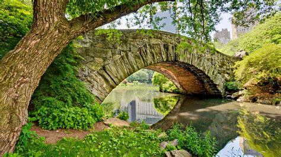

Breathe Easier: Bring Green Spaces to Lower Manhattan
We are calling on:
📍 New York City Council, the NYC Parks Department, and the Office of the Mayor to take immediate and equitable action by:
- Increasing tree planting and maintenance across Lower Manhattan
- Prioritizing the development of new parks and micro-green spaces
- Funding green infrastructure projects that support climate resilience
- Ensuring all residents, regardless of income or background, have access to clean, green, safe outdoor spaces
It’s time to prioritize people over pavement. Green space is not a luxury — it’s a public health necessity.
🖊️ Sign this petition to demand a greener, cleaner, healthier Lower Manhattan. Let’s make our city breathe again.
Clean Air, Not Construction Dust: Tackle Pollution from NYC Building Sites
We are calling on:
📍 The New York City Department of Environmental Protection (DEP), Department of Buildings (DOB), and City Council Members to adopt and enforce policies that:
- Require real-time air quality monitoring at large-scale and high-impact construction sites
- Limit the use of diesel-powered machinery and incentivize cleaner electric alternatives
- Enforce dust suppression methods, such as water spraying and covered transport of materials
- Notify and protect nearby residents during high-pollution phases like demolition
- Hold developers accountable for long-term dust control and post-construction cleanup